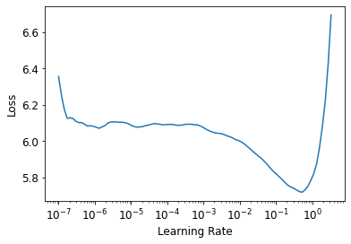
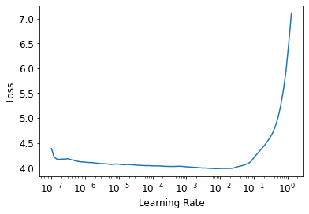
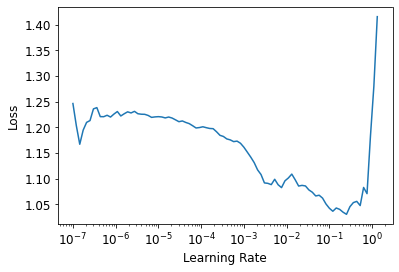
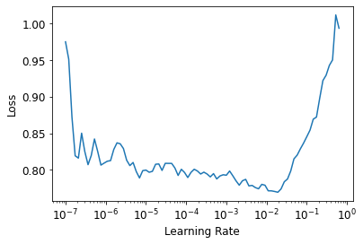

Building a Genre Classifier using fastai
Thu, Dec 10, 2020
10-minute read
Natural Language Processing (NLP) is very useful for many use cases - Chatbots, Speech Recognition, or Sentiment Analysis to determine customers’ satisfaction from social media comments. In this project, I explore NLP using the fastai library.
fastai is a python deep learning library developed by Jeremy Howard and Sylvain Gugger (their paper on the library can be found here. In an introductory blogpost the authors describe it as follows:
“fastai is a deep learning library which provides practitioners with high-level components that can quickly and easily provide state-of-the-art results in standard deep learning domains, and provides researchers with low-level components that can be mixed and matched to build new approaches. It aims to do both things without substantial compromises in ease of use, flexibility, or performance. (…) These abstractions can be expressed concisely and clearly by leveraging the dynamism of the underlying Python language and the flexibility of the PyTorch library.
I will use fastai to train a model which outputs a song’s genre based on its lyrics. To facilitate training I use the so-called “ULMFiT approach”. The ULMFit approach works as follows:
- At first, a so-called language model is trained on a large text corpus. The language model’s task is to guess the next word in a sequence of words.
- This general language model is fine-tuned on the text corpus used for the classification task, i.e. in this case on the song lyrics. This is done to learn and adapt to the specific characteristics of the corpus.
- The fine-tuned language model is eventually used to train the classifier.

1. Getting the Lyrics Data
The first step in this project is to collect some data. Since the goal is to train a classifier based on lyrics we need a corpus of song texts. Genius provides a free application programming interface (API) which can be used to extract various information for songs, albums and artists. While the API cannot be used to directly get lyrics, there is a package called lyricsgenius that does just that. lyricsgenius utilizes the API to extract information and uses this information to actually scrape the song lyrics using the Beautiful Soup package.
In order to use lyricsgenius, one needs to sign up for the genius api using a and create a client access token. After the token is created, it can be stored in a .env file. This way the token does not need to be hard coded in the script. Hence, a .env file is created containing
CLIENT_ACCESS_TOKEN=XXXXX
where XXXXX is the personalized token. After this is done, we load the packages and load the client token into our environment.
from dotenv import load_dotenv
import os
import lyricsgenius as lg
import pandas as pd
from pandas.io.json import json_normalize
import json
import fastbook
from fastai.text.all import *
# load environment variables
# requires CLIENT_ACCESS_TOKEN from genius API
load_dotenv()
In the next step, the genius class is initiated using our access token:
# initiate genius
token = os.getenv("CLIENT_ACCESS_TOKEN")
genius = lg.Genius(token, remove_section_headers=True, skip_non_songs=True)
From the documentation, we learn that getting and saving the lyrics for all songs from an artist can be done using only two lines of code. To avoid repetitive code, we write a small function, which iterates through a list of artists, collects all the lyrics and saves them as single JSON files named after the artists.
def get_lyrics(token, artists, filepath="."):
genius = lg.Genius(token, remove_section_headers=True, skip_non_songs=True)
for artist in artists:
lyrics = genius.search_artist(artist, get_full_info=False)
lyrics.save_lyrics()
The goal for our model is to classify German songs into one of three genres: Hip-Hop, German Pop, or Schlager. For this project, we choose three artists for every genre with large discographies:
- Hip-Hop: Kool Savas, Samy Deluxe, Capital Bra
- Pop: Herbert Grönemeyer, Silbermond, Mark Forster
- Schlager: Helene Fischer, Wolfgang Petry, Matthias Reim
artists = ["Kool Savas", "Samy Deluxe", "Capital Bra",
"Herbert Grönemeyer", "Silbermond", "Mark Forster",
"Helene Fischer", "Wolfgang Petry", "Matthias Reim"]
get_lyrics(token=token, artists=artists)
In a last step, we load all the lyrics into a single pandas DataFrame and create the target variable used for the genre classification later on, i.e. the genre, and save the data as a csv file.
dfList = list() # create empty list to store the DataFrames
for file in os.listdir():
if file.endswith(".json"): # iterate over all .json files, i.e. the lyrics files
artist = file.replace("Lyrics_", "") # extract artist name from file name
artist = artist.replace(".json", "") # extract artist name from file name
with open(file) as json_data:
data = json.load(json_data)
df = pd.DataFrame(data["songs"]) # extract lyrics
if artist in ["KoolSavas", "SamyDeluxe", "CapitalBra"]:
genre = "hiphop"
elif artist in ["HeleneFischer", "WolfgangPetry", "MatthiasReim"]:
genre = "schlager"
elif artist in ["Silbermond", "HerbertGrönemeyer", "MarkForster"]:
genre = "pop"
df["genre"] = genre # add genre column
dfList.append(df) # add to DataFrames to list
else:
continue
# combine list to single pandas DataFrame
finalDF = pd.concat(dfList)
lyrics = finalDF[["lyrics", "genre"]]
# remove all entries without lyrics
notNone = lyrics.notnull()
lyrics = lyrics[notNone]
# save lyrics as csv
lyrics.to_csv("./lyrics.csv")
2. Training the Language Model
The fastai library provides a built-in language model which is pretrained on Wikipedia. However, it is trained on English articles, while the lyrics used in this project are German. Hence, we will use another pretrained language model built and provided by Florian Leuerer. It is trained on the German Wikipedia with a vocab size of 30,000 words. We download the model and the vocab:
# download the pretrained german language model from floleuerer
# https://github.com/floleuerer/fastai_ulmfit_german
!wget http://meansqua.red/files/de_ulmfit/30k/de_wikitext.pth -P models
!wget http://meansqua.red/files/de_ulmfit/30k/de_wikitext_vocab.pkl -P models
# specifying paths
path = Path('.')
model_path = Path(f'{path.absolute()}/models')
spm_path = Path(path/'models/spm_de_ft')
We can now load the data from the csv file into a pandas DataFrame again.
lyrics = pd.read_csv("lyrics.csv") # load the lyrics into DF
lyrics.drop("Unnamed: 0", axis=1, inplace=True) # drop first column
The DataFrame has got 2 columns: the “lyrics” column contains all the lyrics for a single song, while the “genre” column indicates the genre, i.e. Hip-Hop, Pop, or Schlager.
lyrics.head(3)
| lyrics | genre | |
|---|---|---|
| 0 | Ich habe einen Schatz gefunden\nUnd er trägt deinen Namen\nSo wunderschön und wertvoll\nMit keinem Geld der Welt zu bezahlen\nDu schläfst neben mir ein\nIch könnt dich die ganze Nacht betrachten\nSeh'n wie du schläfst\nHör'n wie du atmest\nBis wir am Morgen erwachen\nDu hast es wieder mal geschafft\nMir den Atem zu rauben\nWenn du neben mir liegst\nDann kann ich es kaum glauben\nDass jemand wie ich\nSo was Schönes wie dich verdient hat\n\nDu bist das Beste was mir je passiert ist\nEs tut so gut wie du mich liebst\nVergess' den Rest der Welt\nWenn du bei mir bist\nDu bist das Beste was mir ... | pop |
| 1 | Ich bin verloren in deiner Mitte\nMachst mich zum Kämpfer ohne Visier\nAlles gedreht, Sinne wie benebelt\nIch bin so heillos betrunken von Dir\nDu wärmst mich auf mich deinem Wesen\nUnd lässt nicht einen Zentimeter unverschont\nDu flutest alle meine Decks mit Hoffnung\nAuf ein echtes Leben vor dem Tod\nUnd Ja ich atme Dich\nJa ich brenn für Dich\nUnd ja ich leb für Dich\nJeden Tag\nUnd ja du spiegelst mich\nUnd ja ich schwör auf Dich in jeder meiner Fasern\nSagt Ja\nEs ist noch immer so schwer zu glauben\nWie Du die meisten meine Fehler übersiehst\nDu erdest jeden meiner Gedanken\nVerleihs... | pop |
| 2 | Auf einmal steh ich hier allein\nHier im März 2003\nUnd es war viel zu zeitig\nEs war viel zu zeitig\nUnd ich hab noch zu dir gesagt\nWie immer, "Bis zum nächsten Mal"\nUnd es war viel zu zeitig\nEs war viel zu zeitig\nIch hör sie sagen: "Jetzt hast du es geschafft\nBist jetzt an einem besseren Platz"\nMeine Ohren verstehen das\nDoch das Herz sagt, es fehlt was\n\nMit jedem Tag der vergeht, lebst du weiter\nIn meiner Erinnerung\nHab all die Bilder mit dir gespeichert\nIn meiner Erinnerung\nAlles endlich, alles verglüht\nGeht so schnell eh du dich versiehst\nIch hab dich hier, ich trag dich... | pop |
In the next step, we need to provide the data in a format that the fastai API can use. To do this, we use the DataBlock API to load text from a DataFrame. Since the pretrained model used the SentencePieceTokenizer, we have to use it here as well. After calling the DataBlock() function, the data is loaded using fastai’s dataloaders() function with a batch size of 64.
# load tokenizer
tok = SentencePieceTokenizer(lang="de", cache_dir=spm_path)
# load data using fastai's DataBlock API
lyrics_lm = DataBlock(blocks=TextBlock.from_df('lyrics', is_lm=True, tok=tok),
get_x=ColReader('text'),
splitter=RandomSplitter(0.1))
# create dataloaders
dlsLyrics = lyrics_lm.dataloaders(lyrics, bs=64)
We can now initialize the language model:
# initialize the model
pretrained_fnames = ["./de_wikitext", "./de_wikitext_vocab"]
learn_lm = language_model_learner(dlsLyrics, AWD_LSTM, drop_mult=0.5, pretrained=True,
pretrained_fnames=pretrained_fnames,
metrics=[accuracy, Perplexity()]).to_fp16()
fastai provides a helpful function to find the optimal learning rate for model training: lr_find(). This function uses an idea developed by Leslie N. Smith plots the loss against various learning rates. In order to accellerate learning, we want to choose a learning rate, at which the loss declines the fastest. This is at the steepest decline in the plot, here at a learning rate of around 0.05. Hence, we choose this as the learning rate for one epoch of training.
learn_lm.lr_find()

lr = 0.05
learn_lm.fit_one_cycle(1, lr)
| epoch | train_loss | valid_loss | accuracy | perplexity | time |
|---|---|---|---|---|---|
| 0 | 4.452115 | 4.318273 | 0.279766 | 75.058861 | 02:27 |
We then unfreeze the last layers and do some more fine tuning:
learn_lm.unfreeze()
learn_lm.lr_find() # find optimal learning rate

lr = 0.001
learn_lm.fit_one_cycle(10, slice(lr/10,lr))
| epoch | train_loss | valid_loss | accuracy | perplexity | time |
|---|---|---|---|---|---|
| 0 | 3.980742 | 4.296264 | 0.283326 | 73.424942 | 02:53 |
| 1 | 3.923265 | 4.228052 | 0.291951 | 68.583511 | 02:53 |
| 2 | 3.830324 | 4.170166 | 0.298066 | 64.726166 | 02:53 |
| 3 | 3.742310 | 4.128229 | 0.303512 | 62.067913 | 02:53 |
| 4 | 3.642176 | 4.106679 | 0.306674 | 60.744648 | 02:53 |
| 5 | 3.587293 | 4.087434 | 0.308790 | 59.586815 | 02:53 |
| 6 | 3.489287 | 4.082561 | 0.309944 | 59.297165 | 02:53 |
| 7 | 3.457309 | 4.077933 | 0.311229 | 59.023361 | 02:53 |
| 8 | 3.437356 | 4.076725 | 0.311844 | 58.952057 | 02:53 |
| 9 | 3.455793 | 4.077275 | 0.311932 | 58.984505 | 02:53 |
Lastly, we save the fine-tuned language model to be able to use this again later on without the need to repeat the fine-tuning.
learn_lm.path = model_path
# save the fine-tuned language model
lm_ft_fns = [model_path/"de_ft", model_path/"de_ft_vocab.pkl"]
learn_lm.to_fp32()
learn_lm.save(lm_ft_fns[0], with_opt=False)
learn_lm.save_encoder(f'{lm_ft_fns[0]}_encoder')
with open(lm_ft_fns[1], 'wb') as f:
pickle.dump(learn_lm.dls.vocab, f)
3. Train the Genre Classifier
Since we have the data prepared as well as the fine-tuned language model, we can now build the genre classifier by combining both. We first need to load the Tokenizer and the vocab used for the language model:
# load tokenizer and vocab
tok = SentencePieceTokenizer(lang="de", sp_model=spm_path/'spm.model')
with open(f'{lm_ft_fns[1]}', 'rb') as f:
vocab = pickle.load(f)
In the same way as before, DataBlock() is used to get the lyrics data into the model again. However, since we now want to train a classifier on the outcome labels attached to the songs, the genre column is provided as the outcome column.
# prepare the data
dblocksClass = DataBlock(blocks=(TextBlock.from_df('lyrics', tok=tok, vocab=vocab),
CategoryBlock),
get_x=ColReader('text'),
get_y=ColReader('genre'),
splitter=RandomSplitter(0.2))
dls_class = dblocksClass.dataloaders(lyrics, bs=64)
In a similar way to above, the model is initialized, the learning rate is chosen, and the classifier is being trained.
# initialize classifier
learn = text_classifier_learner(dls_class, AWD_LSTM, drop_mult=0.5, pretrained=False,
metrics=[accuracy]).to_fp16()
learn.path = model_path
# load encoder
learn.load_encoder(model_path/'de_ft_encoder')
# find the learning rate
learn.lr_find()

lr = 0.05
learn.fit_one_cycle(1, lr)
| epoch | train_loss | valid_loss | accuracy | time |
|---|---|---|---|---|
| 0 | 0.981085 | 0.872590 | 0.707692 | 00:43 |
learn.unfreeze()
learn.lr_find()

lr = 0.001
learn.fit_one_cycle(10, slice(lr/10,lr))
| epoch | train_loss | valid_loss | accuracy | time |
|---|---|---|---|---|
| 0 | 0.791861 | 0.657475 | 0.805128 | 01:56 |
| 1 | 0.782813 | 0.505342 | 0.815385 | 01:55 |
| 2 | 0.749134 | 0.427751 | 0.848718 | 01:55 |
| 3 | 0.704013 | 0.412686 | 0.861538 | 01:55 |
| 4 | 0.657263 | 0.386712 | 0.874359 | 01:55 |
| 5 | 0.610100 | 0.361737 | 0.894872 | 01:55 |
| 6 | 0.568985 | 0.360022 | 0.876923 | 01:55 |
| 7 | 0.540369 | 0.355766 | 0.884615 | 01:55 |
| 8 | 0.521280 | 0.348930 | 0.892308 | 01:55 |
| 9 | 0.501589 | 0.347173 | 0.889744 | 01:55 |
Using this approach, we achieve an accuracy of 89% on the holdout test set. This is pretty good, especially considering that genres are to a large extent characterized by the audio, maybe even more than by the lyrics, and that Pop music and Schlager often share many similarities in their texts.
4. Exporting / Saving the Model
The last step now is to save the model, so that it can be loaded and used in other applications without to be trained again.
learn.export()